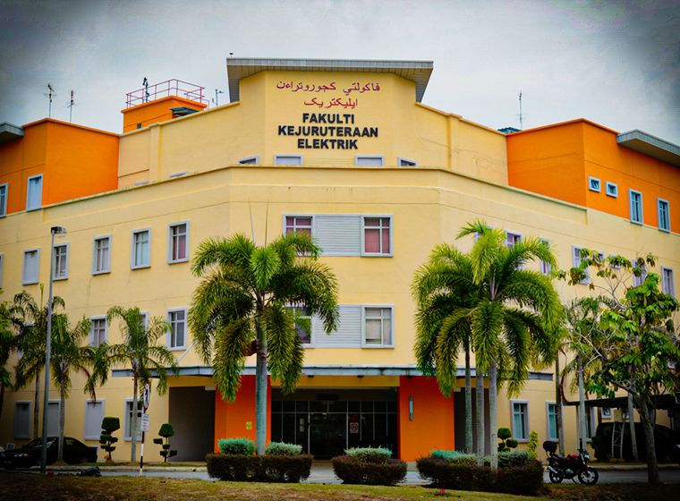
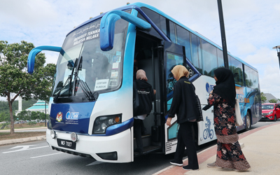
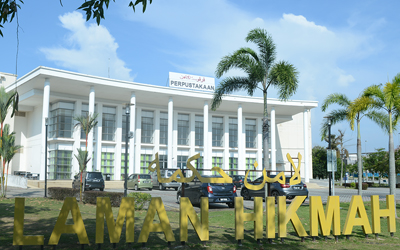
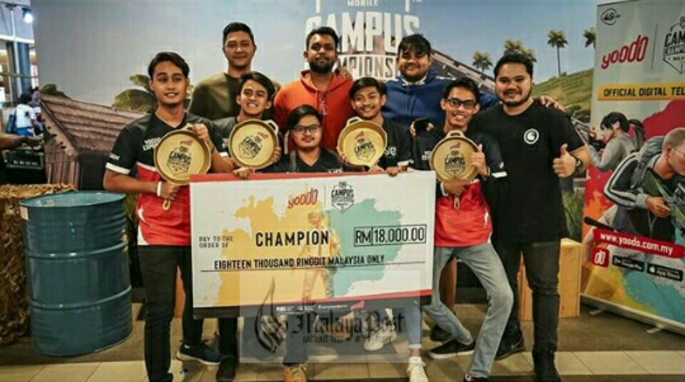
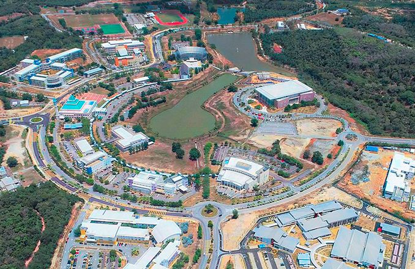

University overview
About Universiti Teknikal Malaysia Melaka
Established in 2004, Universiti Teknikal Malaysia Melaka (UTeM) has grown into a dynamic private university focused on delivering career-oriented education. Originally founded as the Masterskill School of Nursing and Healthcare, UTEM achieved full university status in 2012 and expanded its academic portfolio into Business Management, Information Technology, Computer Science, and Allied Health Sciences.
Fully accredited by the Malaysian Qualifications Agency (MQA) and recognized internationally by the Accreditation Service for International Schools, Colleges & Universities (ASIC), UTEM provides industry-focused diplomas, bachelor's degrees, and postgraduate qualifications designed to equip graduates with practical skills for the modern workforce.






International students
Study at Universiti Teknikal Malaysia Melaka as an international student
Compare Universiti Teknikal Malaysia Melaka courses, campuses, fees and entry requirements for your intended intake.
Programmes and tuition
Universiti Teknikal Malaysia Melaka UTeM courses and fees for international students
| No | PROGRAMME | FEES |
|---|---|---|
| 1 | Engineering/Engineering Technology | RM 49,000.00 |
| 2 | IT/Computer Science | RM 41,000.00 |
| 3 | Technology Management and Technopreneurship | RM 49,000.00 |
Schedule remarks:
Excluding student accommodation.
GENERAL ENTRY REQUIREMENT: Obtained at least three (3) principals in General Certificate of Education Advanced Level (GCE A-Level) Examination [UK Examination System] or International Baccalaureate (IB) obtained in one sitting. For countries which do not follow the UK examination or International Baccalaureate (IB) system, intake consideration shall be based on the equivalency of qualification table by the Malaysian Qualification Agency. Have completed at least twelve (12) years of education. Secondary school/ higher secondary school. Diploma from institution of higher learning.
LANGUAGE REQUIREMENTS: A minimum score of 500 in the Test of English as a Foreign Language (TOEFL) OR A minimum score/Band 5.0 in the International English Language Testing System (IELTS). Applicants without TOEFL/IELTS or those who obtained a score/band below the requirement above are required to undergo and pass the English Program conducted by UTeM prior to commencement of the undergraduate programmes EXCEPT for Indonesia and Brunei.
SPECIAL PROGRAMME REQUIREMENTS: Engineering/Engineering Technology Programme: At least C grades (50 percent minimum) in GCE A-Level/IB Examination in all of the following subjects: Mathematics, Physics and At least C grade (50 percent minimum) in one (1) other subject. ICT/Technology Management and Technopreneurship Programme: At least C grades in GCE A-Level/IB Examination in Mathematics and C grades in two (2) other subjects. A Diploma from an institution of higher learning recognised by the Government of Malaysia and approved by the Senate of the University. Engineering Programme/Engineering Technology Programme/ ICT Programme/ Technology Management and Technopreneurship: Diploma in the related field with a final CGPA of at least 3.00 out of 4.00 or equivalent.
| No | Programme | Duration |
|---|---|---|
| 1 | Bachelor Of Electronic Engineering with Honours | 4 years |
| 2 | Bachelor of Computer Engineering with honours | 4 years |
| 3 | Bachelor Of Electronics Engineering Technology (Industrial Electronics) with Honours | 4 years |
| 4 | Bachelor Of Computer Engineering Technology (Computer Systems) with Honours | 4 years |
| 5 | Bachelor of Electronics Engineering Technology (Telecommunications) with Honours | 4 years |
| 6 | Bachelor Of Electronics Engineering Technology with Hanours | 4 years |
| 7 | Bachelor of Technology In Industrial Electronic Automation with Honours | 4 years |
Schedule remarks:
Commencement time: March and October
| No | Programme | Duration |
|---|---|---|
| 1 | Bachelor Of Electrical Engineering with Honours | 4 years |
| 2 | Bachelor Of Mechatronics Engineering with Honours | 4 years |
| 3 | Bachelor Of Electrical Engineering Technology (Industrial Power) with Hanours | 4 years |
| 4 | Bachelor Of Electrical Engineering Technology (Industrial Automation And Robotics) with Honours | 4 years |
| 5 | Bachelor Of Electrics Engineering Technology with Honours | 4 years |
| 6 | Bachelor Of Technology In Electrical Maintenance System with Honours | 4 years |
Schedule remarks:
Commencement time: March and October
Download UNDERGRADUATE PROGRAMMES - Faculty of Electrical Technology and Engineering (ZIP)
| No | Programme | Duration |
|---|---|---|
| 1 | Bachelor Of Manufacturing Engineering with Honours | 4 years |
| 2 | Bachelor Of Industrial Engineering with Honours | 4 years |
| 3 | Bachelor Of Manufacturing Engineering Technology (Process And Technology) with Honours | 4 years |
| 4 | Bachelor Of Manufacturing Engineering Technology (Product Design) with Honours | 4 years |
| 5 | Bachelor Of Manufacturing Engineering Technology with Honours | 4 years |
| 6 | Bachelor Of Technology In Industrial Machining with Honours. | 4 years |
| 7 | Bachelor Of Technology In Welding with Honours | 4 years |
Schedule remarks:
Commencement time: March and October
| No | Programme | Duration |
|---|---|---|
| 1 | Bachelor Of Technology Management with Honours Technology Innovation) | 4 years |
| 2 | Bachelor Of Technology Management with Honours (High Technology Marketing) | 4 years |
| 3 | Bachelor Of Technopreneurship with Honours | 4 years |
| 4 | Bachelor Of Technology Management (Supply Chain Management & Logistics) with Honours | 4 years |
Schedule remarks:
Commencement time: March and October
Download UNDERGRADUATE PROGRAMMES - Faculty Of Technology Management And Technopreneurship (ZIP)
| No | Programme | Duration |
|---|---|---|
| 1 | Bachelor if Computer Science Software Development) witti Hondura | 3.5 years |
| 2 | Banner Of Computer Science (Computes Networking) with Honours | 3.5 years |
| 3 | Bachelor of Computer Science (latabase Management) with Honours | 3.5 years |
| 4 | Bachelor of Computer Science Interactive Medin with Hormors | 3.5 years |
| 5 | Bachelor of Computer Science (Artificial Intelligence) with Honours | 3.5 years |
| 6 | Rachater Of Computer Science Computer Security) with Hottours | 3.5 years |
| 7 | Bacheliy Of Information Technology (Game Tetraligy with Honcurs | 3.5 years |
Schedule remarks:
Commencement time: March and October
Download UNDERGRADUATE PROGRAMMES - Faculty of Information And Communication Technology (ZIP)
| No | Programme | Duration |
|---|---|---|
| 1 | Bachelor Of Mechanical Engineering with Honours | 4 years |
| 2 | Bachelor Of Automotive Engineering with Honours | 4 years |
| 3 | Bachelor Of Mechanical Engineering Technology (Automotive Technology) with Honours | 4 years |
| 4 | Bachelor Of Mechanical Engineering Technology (Refrigeration And Air Conditioning Systems) with Hangurs | 4 years |
| 5 | Bachelor Of Mechanical Engineering Technology (Maintenance Technology) with Honours | 4 years |
| 6 | Bachelor of Mechanical Engineering Technology with Honours | 4 years |
| 7 | Bachelor Of Technology in Automotive with Honours | 4 years |
| 8 | Bachelor Of Technology In Air Conditioning And Refrigeration with Honours | 4 years |
Schedule remarks:
Commencement time: March and October
Download UNDERGRADUATE PROGRAMMES - Faculty of Mechanical Technology and Engineering (ZIP)
| No | Programme | Level | Duration | Total Tuition Fees |
|---|---|---|---|---|
| 1 | Bachelor Of Electronic Engineering with Honours | Degree | 4 years | RM 49,000.00 |
| 2 | Bachelor of Computer Engineering with honours | Degree | 4 years | RM 49,000.00 |
| 3 | Bachelor Of Electronics Engineering Technology (Industrial Electronics) with Honours | Degree | 4 years | RM 49,000.00 |
| 4 | Bachelor Of Computer Engineering Technology (Computer Systems) with Honours | Degree | 4 years | RM 49,000.00 |
| 5 | Bachelor of Electronics Engineering Technology (Telecommunications) with Honours | Degree | 4 years | RM 49,000.00 |
| 6 | Bachelor Of Electronics Engineering Technology with Hanours | Degree | 4 years | RM 49,000.00 |
| 7 | Bachelor of Technology In Industrial Electronic Automation with Honours | Degree | 4 years | RM 49,000.00 |
| 8 | Bachelor Of Electrical Engineering with Honours | Degree | 4 years | RM 49,000.00 |
| 9 | Bachelor Of Mechatronics Engineering with Honours | Degree | 4 years | RM 49,000.00 |
| 10 | Bachelor Of Electrical Engineering Technology (Industrial Power) with Hanours | Degree | 4 years | RM 49,000.00 |
| 11 | Bachelor Of Electrical Engineering Technology (Industrial Automation And Robotics) with Honours | Degree | 4 years | RM 49,000.00 |
| 12 | Bachelor Of Electrics Engineering Technology with Honours | Degree | 4 years | RM 49,000.00 |
| 13 | Bachelor Of Technology In Electrical Maintenance System with Honours | Degree | 4 years | RM 49,000.00 |
| 14 | Bachelor Of Manufacturing Engineering with Honours | Degree | 4 years | RM 49,000.00 |
| 15 | Bachelor Of Industrial Engineering with Honours | Degree | 4 years | RM 49,000.00 |
| 16 | Bachelor Of Manufacturing Engineering Technology (Process And Technology) with Honours | Degree | 4 years | RM 49,000.00 |
| 17 | Bachelor Of Manufacturing Engineering Technalogy (Product Design) with Honours | Degree | 4 years | RM 49,000.00 |
| 18 | Bachelor Of Manufacturing Engineering Technology with Honours | Degree | 4 years | RM 49,000.00 |
| 19 | Bachelor Of Technology In Industrial Machining with Honours. | Degree | 4 years | RM 49,000.00 |
| 20 | Bachelor Of Technology In Welding with Honours | Degree | 4 years | RM 49,000.00 |
| 21 | Bachelor Of Technology Management with Honours Technology Innovation) | Degree | 4 years | RM 49,000.00 |
| 22 | Bachelor Of Technology Management with Honours (High Technology Marketing) | Degree | 4 years | RM 49,000.00 |
| 23 | Bachelor Of Technopreneurship with Honours | Degree | 4 years | RM 49,000.00 |
| 24 | Bachelor Of Technology Management (Supply Chain Management & Logistics) with Honours | Degree | 4 years | RM 49,000.00 |
| 25 | Bachelor if Computer Science Software Development) witti Hondura | Degree | 3.5 years | RM 41,000.00 |
| 26 | Banner Of Computer Science (Computes Networking) with Honours | Degree | 3.5 years | RM 41,000.00 |
| 27 | Bachelor of Computer Science (latabase Management) with Honours | Degree | 3.5 years | RM 41,000.00 |
| 28 | Bachelor of Computer Science Interactive Medin with Hormors | Degree | 3.5 years | RM 41,000.00 |
| 29 | Bachelor of Computer Science (Artificial Intelligence) with Honours | Degree | 3.5 years | RM 41,000.00 |
| 30 | Rachater Of Computer Science Computer Security) with Hottours | Degree | 3.5 years | RM 41,000.00 |
| 31 | Bacheliy Of Information Technology (Game Tetraligy with Honcurs | Degree | 3.5 years | RM 41,000.00 |
| 32 | Bachelor Of Mechanical Engineering with Honours | Degree | 4 years | RM 49,000.00 |
| 33 | Bachelor Of Automotive Engineering with Honours | Degree | 4 years | RM 49,000.00 |
| 34 | Bachelor Of Mechanical Engineering Technology (Automotive Technology) with Honours | Degree | 4 years | RM 49,000.00 |
| 35 | Bachelor Of Mechanical Engineering Technology (Refrigeration And Air Conditioning Systems) with Hangurs | Degree | 4 years | RM 49,000.00 |
| 36 | Bachelor Of Mechanical Engineering Technology (Maintenance Technology) with Honours | Degree | 4 years | RM 49,000.00 |
| 37 | Bachelor of Mechanical Engineering Technology with Honours | Degree | 4 years | RM 49,000.00 |
| 38 | Bachelor Of Technology in Automotive with Honours | Degree | 4 years | RM 49,000.00 |
| 39 | Bachelor Of Technology In Air Conditioning And Refrigeration with Honours | Degree | 4 years | RM 49,000.00 |
Schedule remarks:
Entry Requirements for International Students:
- Have completed at least twelve (12) years of education.
- Obtained at least three (3) principals in General Certificate of Education Advanced Level (GCE A-Level) Examination or International Baccalaureate (IB) obtained in one sitting.
- Language Requirements: A minimum score of 500 in the Test of English as a Foreign Language (TOEFL) OR a minimum score/Band 5.0 in the International English Language Testing System (IELTS).
- Applicants without TOEFL/IELTS or those who obtained a score/band below the requirement are required to undergo and pass the English Program conducted by UTeM prior to commencement of the undergraduate programmes EXCEPT for Indonesia and Brunei.
Course Fees:
- All listed course fees are excluding student accommodation.
Download fee schedule (ZIP)
Stored fee document for Universiti Teknikal Malaysia Melaka (UTeM). Check the printed validity and terms.
UTeM rankings: QS World, Asia & Malaysia
Verified . Each figure below names its ranking edition.
- QS World 2027
- #1201–1400
- QS Asia 2026
- #=262
- Malaysia · QS World 2027
- #30
Malaysia positions are calculated among the 32 institutions listed by QS under Malaysia in its World 2027 table. This is not a separate government ranking. An = sign marks a tie. Institutions in the same world-rank band share a national position range because their exact order is not published.
QS World and QS Asia use different methods. Overall university positions do not establish the ranking of a particular BBA, IT, MBA or other program.
Explore the campus
Campus gallery
Questions and answers
Frequently Asked Questions About Universiti Teknikal Malaysia Melaka UTeM
View ranking sources
Universiti Teknikal Malaysia Melaka (UTeM) - QS profile · QS World University Rankings 2027 - official results spreadsheet (v1.1) · UTeM - QS Asia 2026 result · QS World University Rankings 2027 - release corrections
What is the QS World ranking of Universiti Teknikal Malaysia Melaka (UTeM) in 2027?
UTeM is ranked #1201–1400 in QS World University Rankings 2027.
Sources: Universiti Teknikal Malaysia Melaka (UTeM) - QS profile · QS World University Rankings 2027 - official results spreadsheet (v1.1)
What is the QS Asia ranking of Universiti Teknikal Malaysia Melaka (UTeM) in 2026?
UTeM is ranked #=262 in QS Asia University Rankings 2026.
Sources: UTeM - QS Asia 2026 result
What is the ranking of Universiti Teknikal Malaysia Melaka (UTeM) in Malaysia?
UTeM has Malaysia position #30 among the 32 institutions listed under Malaysia in QS World 2027, calculated from the published table. The world-rank band does not establish a more precise national order. This is a position within the QS World table, not a separate government ranking or a QS Asia position.
Sources: QS World University Rankings 2027 - official results spreadsheet (v1.1) · QS World University Rankings 2027 - release corrections
Do QS Stars, SETARA or partner rankings give Universiti Teknikal Malaysia Melaka (UTeM) an overall QS rank?
QS Stars and SETARA are ratings, not numerical positions in a QS league table. A subject ranking applies to that subject, and a partner university rank belongs to the named partner. Check the institution, ranking system and edition before comparing.
Sources: QS Stars rating system
What are UTeM's tuition fees for international students?
Find your program and campus in the fee chart on this page, then read the relevant student category, fee columns and remarks. The schedule uses labels including Total Tuition Fees. Different programs and fee periods cannot be combined into one reliable tuition price. Amounts not shown need an intake-specific quotation.
What are UTeM's tuition fees for Bangladeshi students?
Bangladeshi applicants should check the international-student rate for their program and intake. This page does not establish a separate Bangladesh-only tuition rate or guarantee eligibility for a discount. Check nationality-specific charges, deposits, visa costs and scholarship conditions in the schedule and your written offer.
Does the UTeM fee chart show fees per semester or per year?
Use the exact period printed in each column. A first-year payment, fee per semester and full-program total describe different costs. Where a semester or annual breakdown is absent, request a payment schedule; dividing a program total can give the wrong instalment amount.
Where can I find the official UTeM fee chart?
The download links on this page open the stored fee documents. One-Step is a student guidance website. Confirm the document's edition, campus, student category and validity with the university before accepting an offer or paying. The university's current written fee schedule and offer determine the amount payable.
Which year do the UTeM fees apply to?
Use any effective dates and intake restrictions stated in the fee documents and course remarks. A single validity year has not been confirmed for every table on this page. A recent page update does not mean all underlying fees are for the current year.
Does UTeM offer scholarships for international students?
Check any scholarship, adjusted tuition or discount columns alongside their conditions. A listed reduction is not an automatic award for every international or Bangladeshi applicant. Ask for the scholarship name, eligibility, application deadline, renewal conditions and final payable fee in writing.